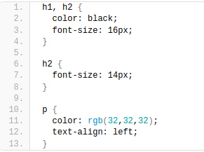

¿Cómo funcionan las hojas de estilo en cascada?
Las hojas de estilo CSS son un conjunto reglas que enumeran en un fichero .css y que describen el aspecto que deben tener los diferentes elementos HTML de una página.
Lo interesante de esto es que funcionan con una filosofía de patrones o plantillas, es decir, no es necesario especificar cada uno de los elementos, sino que se pueden definir reglas como estas dos:
- Los títulos de nivel 1 y 2 han de ser de color negro y un tamaño de fuente de 16 y 14 pixeles respetivamente.
- El texto de los párrafos están alineados a la izquierda, tienen un tamaño de fuente de 12 pixeles y un color gris oscuro.
A modo de comparación, si dominas el uso de estilos en Microsoft Word, verás que esto se parece mucho al concepto de estilo en Word, aunque las CSS son infinitamente más potentes que Word en todas sus posibilidades.
